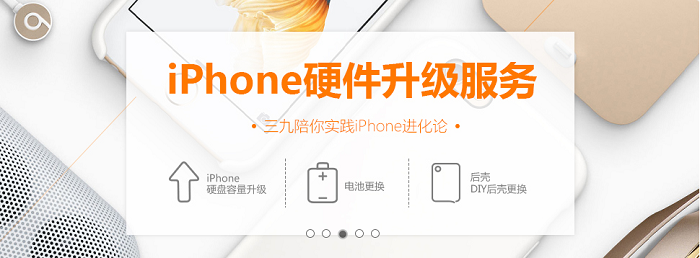
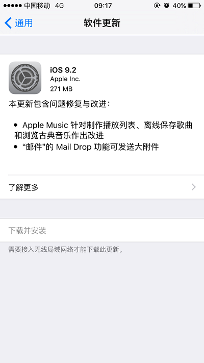
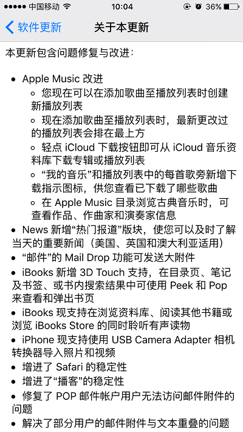
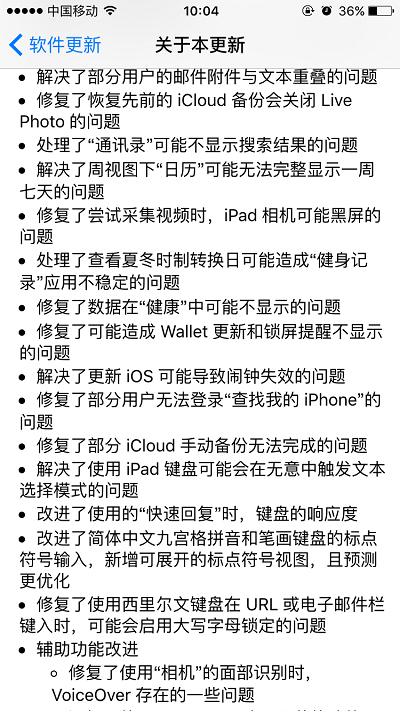
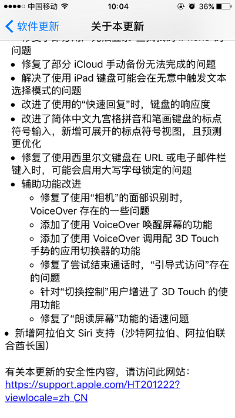
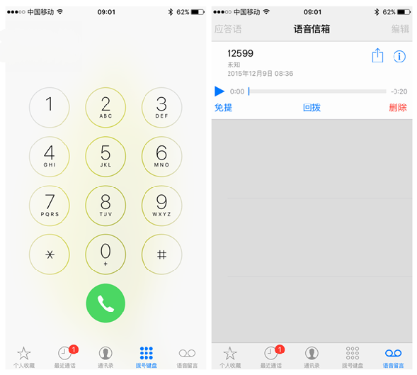

12月9日凌晨，苹果推送了iOS 9.2正式版，从这次更新修复的内容来看，密密麻麻的一大版，似乎还是解决了不少问题的。其中iOS 9.2正式版系统版本号仍然为“13C75”,与此前的Beta 4公测版完全一致。

大家最关心的莫过于更换内存的机子能否可以正常升级，之前网上流言不断，升级内存的设备即将被封堵，且一段时间内升级内存的机子升级系统还出现“53”的错误，大家的一颗心都悬起来了，升级也变得小心谨慎很多，经三九手机网技术部工程师测试，升级内存的机子可以正常升级完成，大家悬着的心可以放下了，之前网上的多种流言也就不攻自破了，不过还是提醒大家，升级前备份好个人资料，以免升级出现问题，导致资料丢失。下面简单介绍本次更新及修复的内容：
 
 
这次更新文件大小在270MB左右，iOS 9.2版本的Apple Music您现在可以在添加歌曲至播放列表时创建新播放列表,现在添加歌曲至播放列表时，最新更改过的播放列表会排在最上方。轻点iCloud下载按钮即可从iCloud音乐资料库下载专辑或播放列表，“我的音乐”和播放列表中的每首歌旁新增下载指示图标，供您查看已下载了哪些歌曲。在Apple Music目录浏览古典音乐时，可查看作品、作曲家和演奏家信息。
为邮件增加了Mail Drop功能可以发送大附件。
iBooks 新增 3D Touch 支持，在目录页、笔记及书签、或书内搜索结果中可使用Peek 和 Pop 来查看和弹出书页，iBooks 现支持在浏览资料库、阅读其他书籍或浏览 iBooks Store 的同时聆听有声读物。
本次更新给iPhone加入了“USB Camera Adapter”，它意味着，通过苹果那根Lightning转usb的数据线，你可以直接通过相机或u盘将照片导入iPhone里(要求至少iPhone 5或之后机型)。
另外，iOS9.2正式版新增语音信箱，苹果官方与中国移动达成合作，iPhone语音信箱由中国移动首家推出。
iPhone的语音信箱此前已在美国、英国、法国等59个国家和地区推出，现在中国则是第60个。不过，经过验证发现，中国版iPhone语音信箱是苹果与中国移动首发的，目前也只有移动用户才能在设置密码后，获得一个月的免费语音信箱试用服务，之后如果要继续使用，则需要支付每月3元的费用。

其实在整个iOS 9.2的升级测试过程中，除了对系统的一些 BUG 和延迟现象进行改进外，苹果的重心还是放在了Safari浏览器视图控制器与第三方应用的结合之上。现在在 Safari 上添加或使用一些特定的第三方应用，你会发现十分方便，就像使用客户端一样。
以上就是本次更新的内容，如需了解更多，敬请关注三九手机网官方微信，你会知道的更多。